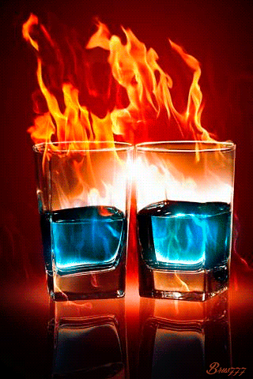
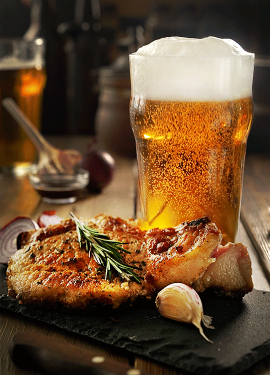
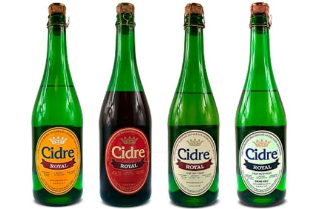

Начнём тест?
Поздравляю,ты вкусный коктейль!
Ты любознательная и открытая натура, крайне заинтересованная в новых ощущениях. Именно поэтому ты выбираешь коктейли: это же ужасно скучно – все время пить одно и то же! Иногда эти новые ощущения приводят к непредсказуемому результату. В общем, можно сказать, что вся твоя жизнь – это коктейль «ядерная зима».
Поздравляю,ты текила!
Этот крепкий спиртной напиток пьют женщины с твердым характером, сильные, волевые. Любители текилы очень любят лесть и слишком мнительны. Такие мужчины могут совершить необдуманные, спонтанные поступки, за которые впоследствии иногда бывает стыдно Они легко и пылко влюбляются, но с такой же легкостью расстаются с предметом своего обожания.

Поздравляю,ты джин-тоник!
Напиток интеллектуалов, людей, любящих порассуждать. Выпив джин-тоника, женщина может начать говорить много и на разные темы. Это признак того, что ей надо выговориться, что в жизни у нее мало моментов, когда она может просто побыть собой. Будь внимательным слушателем — и ты покоришь сердце любителя джина.

Поздравляю,ты old-fashioned!
Поклонники этого напитка обладают утонченным вкусом и хорошими манерами.Они консервативны, рассудительны, ценят покой и всегда принимают взвешенные решения. К тому же на таких людей можно положиться — они благородны и никогда не предадут.

Поздравляю,ты ром!
Скрупулезные люди, которые серьезно относятся ко всему, ориентированы на себя и свои потребности. Они очень спокойные, уравновешенные, постоянные, отличаются особой ответственностью. Для них важны отношения, дружба, семейные ценности. Часто это люди с закрытым характером, немногословные, но их ценят и любят на работе.
Поздравляю,ты вкусный пунш!
Доброжелательные, мягкие, общительные и открытые люди. Им нравится заботиться о других людях, супруга окружают заботой, любят детей и животных. Им необходима большая семья. На работе всегда являются душой общества, их любят не только коллеги, но и начальство. Они чувственные и ранимые.

Поздравляю,ты абсент!
Фанаты абсента иногда агрессивные люди, которые всегда знают, что им нужно. Это прирожденные лидеры, часто добиваются руководящих должностей. У них – сильный характер, они устойчивы и непреклонны, но при этом обладают особой харизмой и обаянием. В любви являются собственники, часто идут напролом.
Поздравляю,ты хмельная вишня!

Эти люди обычно в общении веселы, приятны и открыты. Как правило, они очень впечатлительны и сентиментальны. Часто хотят быть всеми любимы и всем понравится, а потому они часто разочаровываются и в людях, и в жизни. Они хорошо учатся и умеют работать. Но часто находясь в коллективе или семье, могут считать себя очень одинокими, непонятыми, неоцененными людьми.
Поздравляю,ты виски с колой!
Это очень эмоциональные натуры, гордые, но отходчивые. Девушки, как правило, излишне уверена в себе и при этом склонна к необдуманным поступкам. Мужчина же – сдержан, рассудителен, смел, умеет правильно расставлять приоритеты, поэтому, как правило, быстро достигает поставленных целей и карьерных высот.

Поздравляю,ты пиво!
Такие люди, как правило, ответственны и мудры. Положиться на них можно и в работе, поэтому их обычно ценит начальство, а подчиненные уважают и даже любят. Ты надежный друг и по этой же причине не самый лучший семьянин. Дружбу они ставят превыше всего и ради нее готовы буквально на любые поступки.
Поздравляю,ты сидр!
Тем, кто предпочитает сидр, постоянно не хватает времени, поэтому в их жизни, в отношениях и даже в комнате нет порядка, а царит хаос. Это творческие, свободолюбивые, любознательные люди, презирающие любые условности. Они за любое приключение или путешествие,могут часами просидеть за компьютерной игрой, которая их увлекла, или за книгой.
Поздравляю,ты водка!
Женщина-водка – дама с твердым характером и железной волей. Она всегда знает, чего хочет и как этого добиться. Обычно эти женщины жизнерадостны, добры и имеют отменное чувство юмора. Мужчина-водка часто бывает мнителен, любит производить впечатление. Правда, есть у этого романтика и обратная сторона: остывает он, как правило, столь же быстро, как и загорается.
Поздравляю,ты бренди!
Такие женщина – настоящая хранительница домашнего очага и верная жена: она любит наводить в доме уют, вкусно готовит, нуждается в нежности и тепле. Мужчина же – истинный аристократ, обладающий стальным характером и добрым сердцем одновременно. Он всегда готов нести ответственность за свои поступки, решителен, а чаще всего про таких, как он, говорят «строг, но справедлив».
Поздравляю,ты ликёр!
Женщины, которые любят сладкое, очень большие ценительницы ликеров. Ликер — очень романтичный напиток, именно поэтому он подходит многим женщинам. Мужчинам, пьющим ликеры, не хватает любви и взаимопонимания. Они очень привязаны к друзьям, семье, коллегам по работе. Такие мужчины будут копаться в себе, выясняя причину.

Поздравляю,ты шампанское!
Ты кокетливый и заводной, но расчетливый и хладнокровный человек. Обычно это экстраверт, просто обожающий быть в центре внимания. Именно про них нередко говорят, что они – душа компании. Как правило,эти люди очень успешны в жизни.
Поздравляю,ты вино!
Белое предпочитают настоящие леди – они сдержаны и рассудительны. Красному отдают предпочтение страстные дамы. Они амбициозны и знают, как добиваться своих целей. Мужчина-вино – настоящий джентльмен: у него безупречные манеры, широкий кругозор и масса обаяния. К сожалению,часто,за маской благородного рыцаря может скрываться просто излишне самоуверенный эгоист.